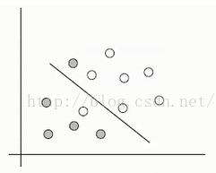
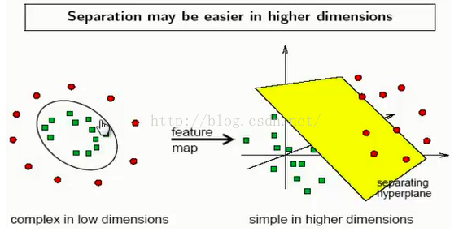
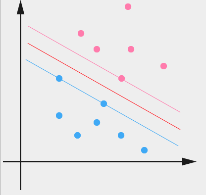

本文将大量参考书《机器学习实战》，包括代码部分，因此更像是这本书svm章节的读书笔记。
优点:泛化错误率低,计算开销不大,结果易解释。
缺点:对参数调节和核函数的选择敏感,原始分类器不加修改仅适用于处理二类问题。
适用数据类型:数值型和标称型数据。
可以线性分类，也可以非线性分类。
找到一个超平面可以把数据很好的分类，使超平面两边数据到超平面的距离和最大。因此超平面(hyperplane)就是分类的决策边界。
比较简单的是可以用一条线分割，就是线性分割。
但是更多时候有（1）特殊情况。有个别比较特殊的样本的数据位置不对劲，比如下图，有两个特殊的圆圈。这种情况，要增加惩罚因子。

（2）还有更特殊的，完全不能使用线性分割，需要使用核函数向高维空间映射之后再分类。
（来自网络的步骤：
1：利用一个非线性的映射把原数据集中的向量点转化到一个更高维的空间中
2：在这个高纬度的空间中找一个线性超平面来根据线性可分的情况处理
）
如下图：

SVM有很多实现,但是本章只关注其中最流行的一种实现,即序列最小优化(Sequential Minimal Optimization,SMO)算法。
希望找到离分隔超平面最近的点,确保它们离分隔面的距离尽可能远。点到超平面的距离称为‘间隔’。
我们希望*间隔大的原因____*是，在我们犯错或者数据集有限的情况下，svm的分类器能够更加强壮，就是更‘容错’。
数据集中所有点到分隔面的最小间隔的2倍,称为分类器或数据集的间隔。
svm就是在找最大的数据集间隔。
常数 C 用于控制“最大化间隔”和“保证大部分点的函数间隔小于1.0”这两个目标的权重。在
优化算法的实现代码中,常数 C 是一个参数,因此我们就可以通过调节该参数得到不同的结果。
一旦求出了所有的 alpha ,那么分隔超平面就可以通过这些 alpha 来表达。这一结论十分直接,SVM中的主要工作就是求解这些 alpha 。

可以看到两个支撑着中间的 gap 的超平面，它们到中间的纯红线separating hyper plane 的距离相等，即我们所能得到的最大的 geometrical margin γ˜ 。而“支撑”这两个超平面的必定会有一些点，而这些“支撑”的点便叫做支持向量Support Vector。
其实就是离超平面最近点。smo就是为了计算支持向量。
由于这些 supporting vector 刚好在边界上，所以它们是满足 y(wTx+b)=1。
而对于所有不是支持向量的点，也就是在“阵地后方”的点，则显然有 y(wTx+b)>1 。
SMO算法：
二次规划求解工具：一种用于在线性约束下优化具有多个变量的二次目标函数的软件。
一旦得到 alpha 的最优值,我们就得到了分隔超平面(2维平面中就是直线)并能够将之用于数据分类。
Platt的SMO算法是将大优化问题分解为多个小优化问题来求解的。这些小优化问题往往很容易求解,并且对
它们进行顺序求解的结果与将它们作为整体来求解的结果是完全一致的。在结果完全相同的同时,SMO算法的求解时间短很多。
smo算法公式推导：https://www.jianshu.com/p/f6382ecc417f
三个要点：拉格朗日乘子法、KKT条件、核函数。 其他QP、SMO优化算法。
（1）拉格朗日乘子法、KKT条件：求取有约束条件的优化问题。对于等式约束的优化问题，可以应用拉格朗日乘子法去求取最优值；如果含有不等式约束，可以应用KKT条件去求取。
只有当是凸函数的情况下，才能保证是充分必要条件，否则两个方法求得的结果只是必要条件。KKT条件是拉格朗日乘子法的泛化。
1 | from sklearn import svm |
参考：https://www.cnblogs.com/berkeleysong/articles/3251245.html
http://blog.csdn.net/alvine008/article/details/9097105
https://www.cnblogs.com/harvey888/p/5852687.html
http://blog.csdn.net/szlcw1/article/details/52259668
机器学习实战